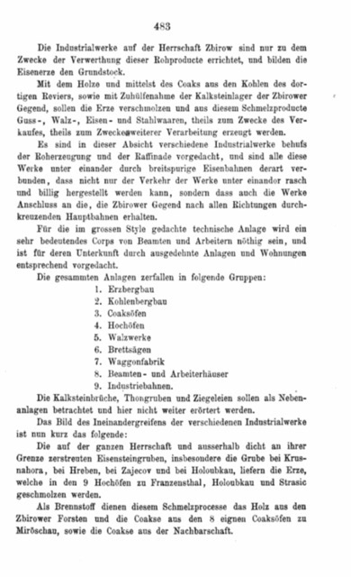
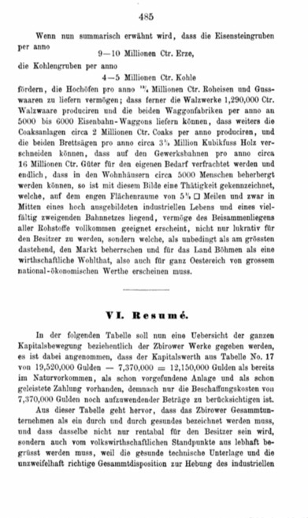
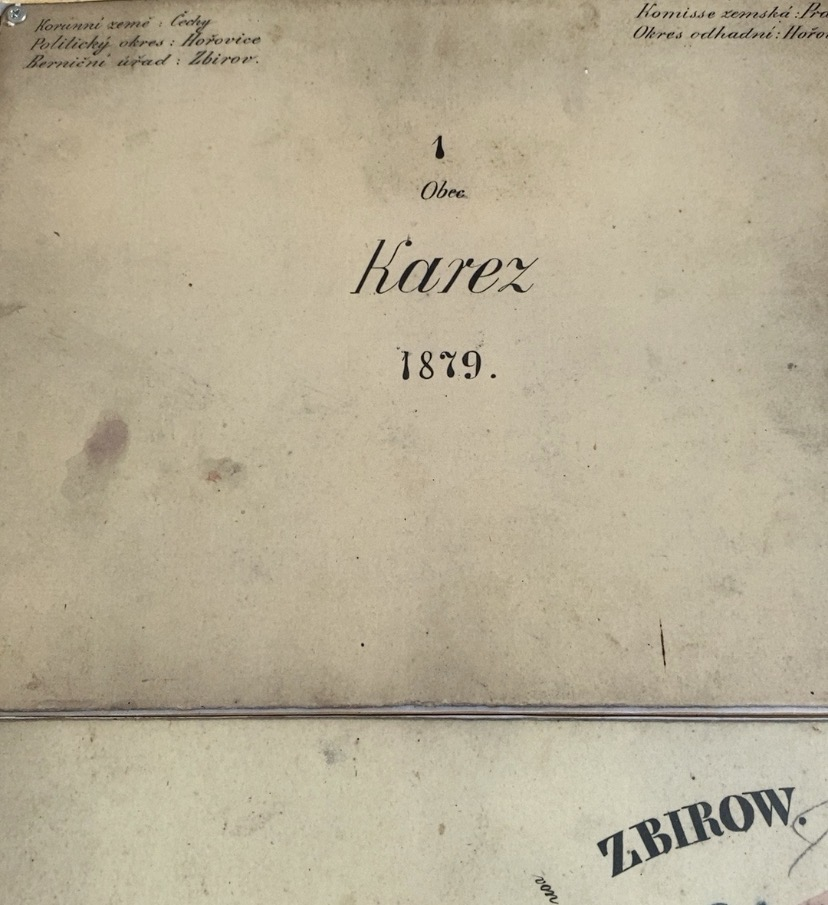
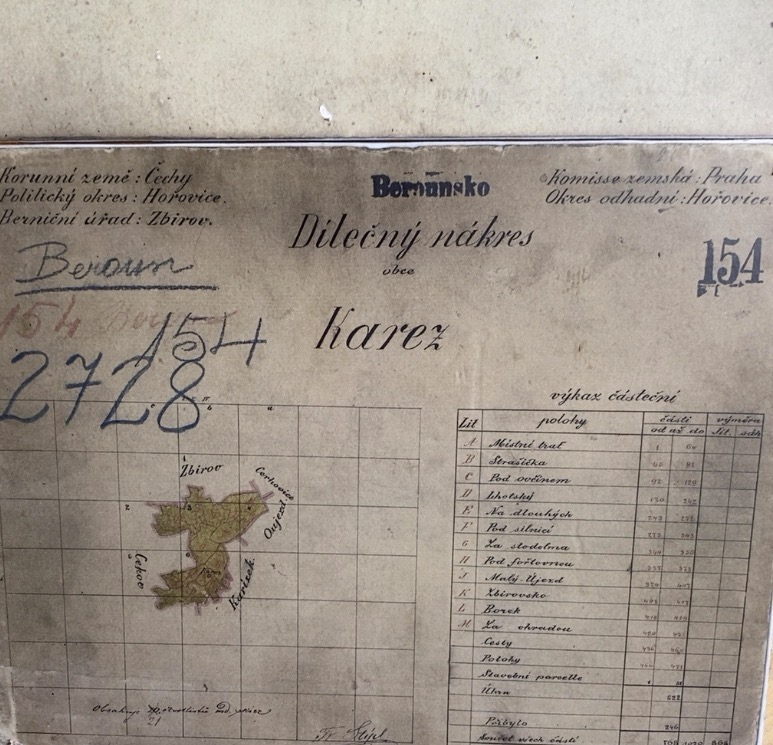
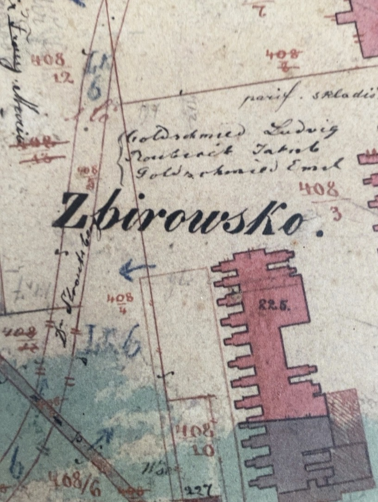

Page 482 — English translation
Report to Messrs. H. v. Goldschmidt & Co. in Vienna concerning the industrial establishments of Dr. Strousberg situated on the Zbirow Estate.
The industrial works on the Zbirow Estate are based upon the concentrated occurrence of considerable quantities of raw materials. Within the estate and immediately adjacent to it, the report records approximately 376 million centners of iron ore, 115 million centners of coal and 37,865 Joch of forest.
Strana 482 — český překlad
Zpráva pro pány H. v. Goldschmidt & Co. ve Vídni o průmyslových závodech Dr. Strousberga nacházejících se na panství Zbirow.
Průmyslové závody na panství Zbirow jsou založeny na soustředěném výskytu značného množství surovin. Na území panství a bezprostředně při jeho hranicích zpráva uvádí přibližně 376 milionů centů železné rudy, 115 milionů centů uhlí a 37 865 jiter lesa.
Seite 482 — deutscher Text
Bericht an die Herren H. v. Goldschmidt & Co. in Wien über die auf der Herrschaft Zbirow gelegenen industriellen Etablissements des Dr. Strousberg.
Die industriellen Werke der Herrschaft Zbirow beruhen auf dem konzentrierten Vorkommen bedeutender Rohstoffmengen. Innerhalb der Herrschaft und unmittelbar an ihren Grenzen nennt der Bericht rund 376 Millionen Zentner Eisenerz, 115 Millionen Zentner Kohle und 37.865 Joch Wald.

Page 483 — English translation
The Zbirow industrial works were established to exploit these raw materials. The ores were to be smelted using wood, locally produced coke and limestone, producing cast goods, rolled iron and steel goods. The works were connected by standard-gauge railways. The report groups the installations as iron-ore mining, coal mining, coke ovens, blast furnaces, rolling mills, steam sawmills, wagon factory, housing and industrial railways.
Strana 483 — český překlad
Průmyslové závody Zbirow byly zřízeny k využití těchto surovin. Rudy měly být taveny pomocí dřeva, místně vyráběného koksu a vápence a měly poskytovat odlitky, válcované železo a ocelové výrobky. Jednotlivé závody byly propojeny železnicemi normálního rozchodu. Zpráva uvádí těžbu železné rudy a uhlí, koksovny, vysoké pece, válcovny, parní pily, továrnu na vagóny, obytné objekty a průmyslové železnice.
Seite 483 — deutscher Text
Die Zbirower Industriewerke wurden zur Verwertung dieser Rohstoffe eingerichtet. Die Erze sollten mit Holz, örtlich erzeugtem Koks und Kalkstein verhüttet und zu Gusswaren, Walzeisen und Stahlwaren verarbeitet werden. Die Werke waren durch normalspurige Bahnen verbunden. Genannt werden Eisenerz- und Kohlenbergbau, Koksöfen, Hochöfen, Walzwerke, Dampfsägewerke, Waggonfabrik, Wohnanlagen und Industriebahnen.

Page 484 — English translation
Rolling mills had been established at Dobřiv near Strašice and Borek near Zbirow. Their products were intended for sale and further processing, including the wagon factory at Holoubkau and the wagon factory at Bubna near Prague. The wagon factories also drew upon timber from the Zbirow estate and the steam sawmills at Zbirow and Holoubkau.
Strana 484 — český překlad
Válcovny byly zřízeny v Dobřívě u Strašic a v Borku u Zbirohu. Jejich výrobky byly určeny k prodeji i k dalšímu zpracování, mimo jiné pro továrnu na vagóny v Holoubkově a továrnu na vagóny v Bubnech u Prahy. Továrny na vagóny využívaly také dřevo ze zbirožského panství a z parních pil ve Zbirohu a Holoubkově.
Seite 484 — deutscher Text
Walzwerke bestanden in Dobřiv bei Strašice und Borek bei Zbirow. Ihre Erzeugnisse waren für Verkauf und Weiterverarbeitung bestimmt, darunter für die Waggonfabrik in Holoubkau und die Waggonfabrik in Bubna bei Prag. Die Waggonfabriken nutzten außerdem Holz der Herrschaft Zbirow und der Dampfsägewerke in Zbirow und Holoubkau.

Page 485 — English translation
The report sets out projected production across the system and states that housing could accommodate approximately 5,000 people. It then turns to the capital requirements and expected profitability of the undertaking.
Strana 485 — český překlad
Zpráva uvádí plánovanou výrobu v rámci celého systému a konstatuje, že obytné objekty mohly pojmout přibližně 5 000 osob. Poté přechází ke kapitálovým nárokům a očekávané výnosnosti podniku.
Seite 485 — deutscher Text
Der Bericht nennt die geplante Produktion des Gesamtsystems und gibt an, dass die Wohnanlagen etwa 5.000 Personen aufnehmen konnten. Anschließend behandelt er Kapitalbedarf und erwartete Rentabilität des Unternehmens.

Page 486 — financial conclusion
The table gives total capital of approximately 19.5 million guilders and projected annual net income exceeding 4 million guilders, corresponding to an overall projected return of approximately 21 percent.
Strana 486 — finanční závěr
Tabulka uvádí celkový kapitál přibližně 19,5 milionu zlatých a plánovaný roční čistý výnos přesahující 4 miliony zlatých, což odpovídá předpokládané celkové výnosnosti přibližně 21 procent.
Seite 486 — finanzieller Abschluss
Die Tabelle nennt ein Gesamtkapital von ungefähr 19,5 Millionen Gulden und einen erwarteten jährlichen Reinertrag von mehr als 4 Millionen Gulden, entsprechend einer projektierten Gesamtrendite von etwa 21 Prozent.



Borek factory parcels — 1879 cadastral evidence
The 1879 cadastral documentation for Kařez includes the mapped parcels and buildings of the historic Borek factory complex.
Parcely továrny Borek — katastrální doklad z roku 1879
Katastrální dokumentace Kařezu z roku 1879 obsahuje zakreslené parcely a budovy historického továrního areálu Borek.
Fabrikparzellen Borek — Katasterbeleg von 1879
Die Katasterunterlagen von Kařez aus dem Jahr 1879 zeigen die Parzellen und Gebäude des historischen Fabrikkomplexes Borek.
Map provenance: Historical cadastral material for Kařez, dated 1879; archival map material photographed in Prague.
Primary source: Bethel Henry Strousberg, Dr. Strousberg und sein Wirken: von ihm selbst geschildert, Berlin, 1876, pp. 482–486.